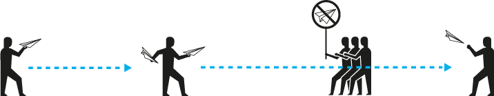
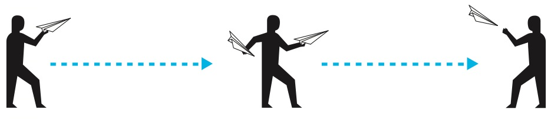
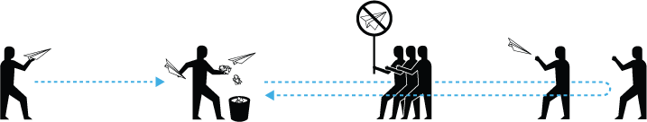
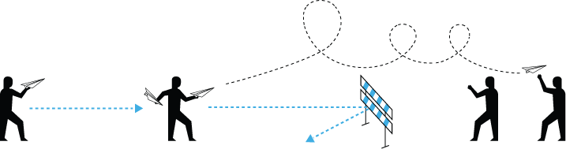
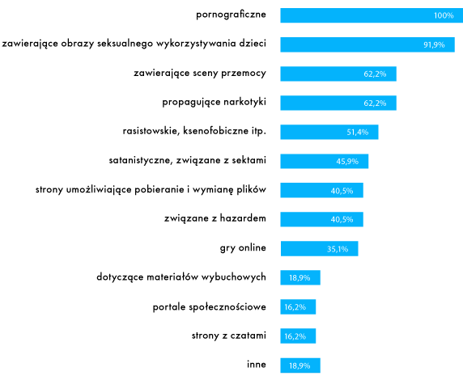
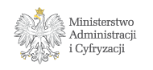

Rozdział 1. Uwalnianie informacji: publikacja i jej konsekwencje

Wypuszczanie informacji na wolność
Niemal wszyscy korzystający z Internetu wiedzą, w jaki sposób można przekazać informację innym. Najprostszym sposobem jest skorzystanie z platform stworzonych tylko po to, byśmy mogli coś opublikować. Te platformy to:
serwisy społecznościowe (np. Facebook, Google+, NK);
serwisy do publikowania określonych treści (np. YouTube, Flickr);
miejsca internetowych dyskusji (usenet, fora, serwisy typu Wykop);
platformy blogowe (np. Blogger, Blox);
serwisy typu „wiki” (np. Wikipedia);
usługi bezpłatnego hostingu, nierzadko połączone z narzędziami do tworzenia stron WWW.
Większość z dostępnych w sieci platform do publikacji treści jest bezpłatna i łatwa w obsłudze. Ceną, jaką płacimy za korzystanie z nich, jest jednak nasza prywatność i oddanie kontroli nad publikowaną informacją w ręce pośrednika (dostawcy usługi). Pośrednik zyskuje dostęp nie tylko do danych, które sami mu podajemy, ale też wielu innych śladów, które zostawiamy za sobą w sieci (numeru IP, informacji o sprzęcie i oprogramowaniu, z których korzystamy itd.).
Ceną za korzystanie z usług pośredników internetowych jest nasza prywatność i oddanie kontroli nad publikowaną informacją. Pośrednik nie tylko poznaje nasze życie online „od podszewki” – może również cenzurować to, co komunikujemy światu.
Poza platformami dostarczanymi przez pośredników istnieją rozwiązania trudniejsze w obsłudze, wymagające więcej wiedzy i środków, ale nadal dostępne dla wszystkich. Każdy może wykupić swoją domenę (adres internetowy) oraz miejsce na serwerze i stworzyć dowolnego bloga, e-usługę, serwis z filmami, forum itd.; dzięki czemu zachowa większą kontrolę nad publikowaną informacją i będzie w stanie lepiej chronić swoją prywatność.
Platformy internetowe i strony WWW z definicji służą do publikowania treści. Są jednak i takie sposoby udostępniania informacji, których nie kojarzymy z „publikowaniem”. Oto przykłady:
sieci P2P, takie jak BitTorrent – użytkownicy utożsamiają je z narzędziami do pobierania plików, ale często programy do ich obsługi jednocześnie udostępniają pliki innym;
pakiety biurowe online (np. Google Docs) – służą do tworzenia dokumentów, ale umożliwiają także publiczne udostępnienie dokumentu;
usługi do przechowywania plików (tzw. cyberlockery) – mają służyć jako „wirtualne dyski”, ale umożliwiają także publiczne udostępnienie zawartości.
Kiedy korzystamy z usług internetowych, możemy zatem publikować informację, nie mając nawet takiego zamiaru. Wówczas informacja zachowuje się jak „wolny ptak”, który uwalnia się bez naszego udziału. I może spowodować problemy.
W USA głośno było o sprawie Jammie Thomas-Rasset, samotnej matki skazanej na 222 tys. dolarów kary za udostępnienie 24 piosenek bez zgody wytwórni muzycznych. W momencie rzekomego naruszenia prawa autorskiego kobieta nie wiedziała nawet, w jaki sposób udostępnia się piosenki w sieci. Była komputerową laiczką. Możliwe, że piosenki udostępniły jej dzieci, także nieświadome tego, co robią.
Wolna informacja i kłopoty
Opublikowana w Internecie informacja żyje własnym życiem. Może się zdarzyć, że naruszy prawo lub wyrządzi szkodę innym użytkownikom sieci i spowoduje kłopoty. Oto przykłady informacji, których opublikowanie rodzi najpoważniejsze konsekwencje:
obrazy seksualnego wykorzystywania dzieci – są dokumentacją przestępstwa; ich rozpowszechnianie wyrządza krzywdę dziecku, które zostało wykorzystane i narusza prawo karne;
treści dotyczące osób prywatnych (np. zdjęcia, korespondencja) – mogą naruszać prywatność osoby, której dotyczą;
treści oszczercze, obraźliwe, nawołujące do przemocy – mogą naruszyć dobra osobiste pomawianej lub obrażanej osoby, ale również prawo karne (jeśli np. podżegają do nienawiści na tle rasowym czy religijnym).
W każdym przypadku odpowiedzialność za opublikowanie treści naruszających prawo lub prawa innych osób ponosi w pierwszym rzędzie sam publikujący. Może się jednak zdarzyć, że opublikowanie informacji narusza prawo lub prawa innych osób, ale publikujący o tym nie wie. Oto typowe rodzaje informacji, które mogą naruszać prawo, choć nie zawsze jest to oczywiste:
O tym, że prawa autorskie można naruszyć nawet przez przypadek, przekonała się Stephanie Lenz, użytkowniczka YouTube, która podobnie jak wielu innych rodziców nagrała zabawny filmik ze swoim dzieckiem w roli głównej. Krótki film przedstawiał tańczące dziecko, ale w tle dało się słyszeć niewyraźnie piosenkę Prince’a. Z tego powodu wytwórnia muzyczna zażądała usunięcia filmu z YouTube.
Funkcję satyrycznych treści w Internecie coraz częściej pełnią tzw. memy, czyli obrazki zawierające stały element (np. wizerunek danej osoby) i humorystyczny – w założeniu – komentarz. Swojego czasu w Polsce popularne były memy z „Panem Andrzejem”, a także z „Babą z Radomia”. Zawierały one wizerunki osób prywatnych i naruszały ich dobra osobiste. Pan Janusz Ławrynowicz, którego wizerunek stał się internetowym „Panem Andrzejem”, nie ukrywał, że memy mocno i negatywnie wpłynęły na jego życie.
Treści, które z założenia miały być niejawne (np. tajne dokumenty, informacje będące tajemnicą handlową firm) – mogą trafiać do Internetu w imię wyższego interesu społecznego, jak również zupełnie przez przypadek. Zdarza się, że naruszają nie tylko tajemnicę, ale również prawa osób, których dane pojawiają się w tych dokumentach.
Opublikowania treści, która miała być zachowana w tajemnicy, w interesie społecznym dokonują tzw. sygnaliści, z angielskiego określani też jako whistleblowerzy, czyli „dmuchający w gwizdek”. Whistleblower publikuje tajne lub poufne informacje, żeby ujawnić nadużycia i zaalarmować społeczeństwo. Znani sygnaliści to np. Bradley Manning (analityk wojskowy, który przekazał portalowi Wikileaks tysiące tajnych dokumentów dotyczących amerykańskiej polityki zagranicznej, w tym wojny w Iraku) czy Edward Snowden (były pracownik amerykańskiego wywiadu, który przekazał mediom tajne dokumenty o programie PRISM).
SPRAWA PKO BP
W maju 2010 r. bank PKO BP niechcący opublikował w sieci wrażliwe dane 1027 firm – dłużników banku. Pewien mężczyzna znalazł te pliki w wyszukiwarce Google i poinformował o tym PKO. Bank powinien był mu podziękować, ale zareagował inaczej – przedstawiciele PKO BP powiadomili prokuraturę, oskarżając mężczyznę o… złamanie zabezpieczeń i próbę szantażu.
Informacja w klatce, czyli o roli pośredników
To, że informacja jest wolna, nie oznacza, że nie istnieją żadne sposoby ograniczenia jej swobody. Nawet jeśli trudne jest całkowite usunięcie danej informacji z cyfrowej przestrzeni, można sprawić, by ta informacja nie dotarła do konkretnych osób, lub próbować ograniczyć obszary, w których może się ona przemieszczać.
Sposób poruszania się informacji po Internecie można sprowadzić do prostego schematu:

W rzeczywistości liczba pośredników może być różna, podobnie jak liczba odbiorców i nadawców. Istotne jest zrozumienie, że w Internecie zawsze są jacyś pośrednicy, choć różne są ich role i możliwości wpływania na informację. Oto podstawowe kategorie pośredników:
operatorzy sieci telekomunikacyjnych, dostawcy Internetu;
podmioty zarządzające systemem DNS (tj. kierujące ruchem w sieci);
dostawcy hostingu;
dostawcy platform służących do publikacji treści (np. Facebook, YouTube itd.).
W Internecie między autorem i odbiorcą treści zawsze znajdują się pośrednicy, którzy faktycznie kontrolują przepływ informacji. Stąd bierze się podstawowy dylemat: „Czy pośrednik powinien ingerować w informację?”. Z jednej strony prywatne firmy nie powinny wchodzić w rolę cenzorów i sędziów, którzy arbitralnie decydują o tym, co jest legalne, a co nie. Z drugiej strony, kiedy dochodzi do naruszenia prawa, a autor treści ukrywa się pod pseudonimem lub numerem IP, pośrednik może najszybciej i najskuteczniej zareagować.
Informacja publikowana w Internecie przechodzi przez wiele rąk: musi być przesyłana przez sieci operatorów, jest zapisywana na serwerach różnych firm, może być upubliczniana przez platformy takie jak YouTube. Wywierając nacisk na pośredników – szczególnie na dostawców hostingu i platform służących do publikacji treści – można skutecznie ujarzmiać informację. Z tej drogi mogą korzystać nie tylko organy państwa (sądy, policja, prokurator), ale także osoby lub organizacje, które uważają, że konkretna publikacja narusza ich prawa. W praktyce każdy, komu przeszkadza informacja opublikowana w Internecie, może zgłosić się do pośrednika i zażądać jej usunięcia.
Faktyczna władza nad informacją, jaką z racji swojej roli mają pośrednicy, generuje bardzo poważne dylematy. Z jednej strony, kiedy dochodzi do naruszenia prawa, o wiele łatwiej i szybciej można dotrzeć do pośrednika niż do autora treści, który często ukrywa się pod pseudonimem lub numerem IP. Z drugiej strony pośrednicy nie powinni wchodzić w rolę cenzorów i sędziów, którzy arbitralnie decydują o tym, co jest legalne, a co nie, ponieważ nie mają do tego odpowiednich kompetencji. W różnych systemach prawnych ten dylemat jest różne rozstrzygany. Więcej na ten temat piszemy w kolejnym rozdziale.
TRZY MODELE ODPOWIEDZIALNOŚCI
Na przestrzeni ostatnich lat wykształciły się trzy główne podejścia do odpowiedzialności pośredników.
1. Koncepcja neutralności – pośrednik powinien jedynie publikować, hostować lub przesyłać informację, nie oceniając jej legalności. Powinien być jak listonosz, który nie zagląda do przenoszonych listów i nie decyduje o tym, czy je dostarczyć, czy nie.
2. Koncepcja warunkowej odpowiedzialności – pośrednicy co do zasady nie powinni ingerować w hostowaną lub publikowaną informację. Jeśli jednak dowiedzą się od odpowiedniego organu (sądu, policji, prokuratora) lub osoby, której prawa zostały naruszone, że z daną informacją jest problem, powinni reagować. Jeśli to zignorują, mogą być pociągnięci do odpowiedzialności.
3. Koncepcja nadzoru – pośrednicy powinni sami dbać o to, aby w Internecie był porządek. Prywatne firmy mogą, a nawet mają obowiązek monitorować treści publikowane na należących do nich platformach lub serwerach i weryfikować, czy nie dochodzi do naruszenia prawa. Jeśli tego nie robią, mogą być pociągnięte do odpowiedzialności.
Rozdział 2. Pośrednik w roli arbitra: usuwanie informacji

Presja na pośredników
Z technicznego punktu widzenia pośrednik zawsze ma możliwość usunięcia treści, która została opublikowana na jego platformie lub znajduje się na jego serwerze. Bardziej problematyczna, z jego punktu widzenia, jest ocena, czy powinien z tej możliwości skorzystać. Na tę ocenę największy wpływ ma regulacja prawna i zasady odpowiedzialności samych pośredników za treści, które publikują użytkownicy ich serwisów. Dyskusja o zasadach odpowiedzialności pośredników jest jednocześnie dyskusją o tym, w jakim stopniu powinni oni ingerować w przesyłane, hostowane lub publikowane treści.
Jeśli prawo, które reguluje działalność pośrednika, nakłada na niego warunkową lub bezwzględną odpowiedzialność za treść, która pojawia się na jego platformie lub serwerze, pośrednik będzie miał silną motywację, żeby zareagować. Z zasady żaden przedsiębiorca nie chce narażać się na odszkodowania i procesy sądowe. Jeśli jednak prawo zwalnia pośredników od wszelkiej odpowiedzialności za treść, reakcja na zgłoszenie, że konkretna informacja narusza czyjeś prawa, będzie zależała wyłącznie od oceny i dobrej woli konkretnego pośrednika. Od tego, jak ukształtujemy zasady odpowiedzialności pośredników internetowych, zależy ich stosunek do hostowanych treści, tj. to, czy będą skłonni je cenzurować, czy chronić przed zewnętrzną ingerencją. Im większa odpowiedzialność, tym większa skłonność do cenzury.
Idąc tym tropem, większość wysoko rozwiniętych krajów, w których spory o treść publikowaną w Internecie są istotnym problemem, przewiduje warunkową odpowiedzialność pośredników za treści, które publikują użytkownicy ich serwisów. To oznacza, że zgodnie z prawem pośrednik nie ma obowiązku monitorowania i oceniania informacji, jakie pojawiają się na jego platformie lub serwerze, natomiast powinien zareagować na zgłoszenia osób lub organizacji, które twierdzą, że konkretna informacja narusza ich prawa.
PRAWO WŁAŚCIWE
Ustalenie, jakiemu prawu podlega serwis internetowy, z którego korzystamy, bywa trudne. Pośrednik może być zarejestrowany w jednym kraju, mieć serwer w drugim, a prowadzić faktyczną działalność w trzecim. Od prawa każdego z tych krajów i tzw. reguł kolizyjnych, jakie przewidują, zależy to, której jurysdykcji podlega działalność pośrednika.
UŚUDE
W Polsce procedurę usuwania treści z Internetu na wniosek osób lub organizacji, które uważają, że ich prawa zostały naruszone, reguluje ustawa o świadczeniu usług drogą elektroniczną (artykuł 14).
PROBLEMATYCZNA WIEDZA
Ustalenie, czy i kiedy pośrednik dowiedział się, że konkretna informacja może naruszać prawo, jest bardzo problematyczne. Czy sam fakt, że pośrednik moderuje treści w swoim serwisie (a więc ktoś to wszystko czyta!), oznacza, że wie o naruszeniach prawa? A co, jeśli moderacja jest półautomatyczna i polega tylko na usuwaniu wulgaryzmów? Czy każde zgłoszenie, bez względu na treść, pośrednik powinien traktować jako wiarygodne? W praktyce te dylematy muszą rozstrzygać sądy.
„Zauważ i zdejmij”
Na świecie rozwinęły się różne warianty warunkowej odpowiedzialności pośredników za treść, różniące się przede wszystkim rodzajem reakcji, której prawo oczekuje od pośrednika po otrzymaniu zgłoszenia. Najczęściej spotykanym i przyjętym także w Polsce jest wariant określany angielskim terminem notice & takedown (ang. ‘zauważ i zdejmij’).
W tym wariancie pośrednik nie ponosi odpowiedzialności tak długo, jak długo nie wie, że na jego serwerze lub platformie internetowej znajduje się treść, która narusza czyjeś prawa lub prawo powszechnie obowiązujące. Od momentu, w którym został o tym poinformowany przez samego pokrzywdzonego albo odpowiedni organ państwowy (policję, sąd, prokuraturę), może już być pociągnięty do odpowiedzialności – chyba że odpowiednio zareaguje, czyli usunie sporną treść. W niektórych systemach prawnych, zanim ją usunie, musi jednak zawiadomić autora i wysłuchać jego racji.
Polskie prawo tego dodatkowego etapu nie przewiduje. Jeśli pośrednik usunie sporną treść, będzie zwolniony z odpowiedzialności. Oczywiście, właściciel serwera czy platformy internetowej nadal może odmówić i pozostawić treść opublikowaną (np. jeśli uzna zgłoszenie za niewiarygodne albo uzna racje autora), ale wówczas naraża się na odpowiedzialność.
Odpowiedzialność za opublikowanie treści naruszających prawo w pierwszym rzędzie ponosi sam publikujący. W polskim prawie pośrednik (np. hostujący treść) odpowiada tylko, jeśli wie o naruszenia prawa i nie reaguje. Pośrednik nie ma obowiązku monitorowania i oceniania informacji, jakie pojawiają się na jego platformie lub serwerze.
SPRAWA PORTALU NASZAKALWARIA.PL
W 2010 r. burmistrz Kalwarii Zebrzydowskiej Augustyn Ormanty pozwał serwis NaszaKalwaria.pl. Zdaniem burmistrza 18 komentarzy, które opublikowano w serwisie, naruszało jego dobra osobiste. Wiele z nich stanowiło krytykę działań burmistrza. Tylko niektóre można było uznać za naprawdę obraźliwe: m.in. burmistrz został nazwany „baranem”, wypowiadane były też opinie na temat stanu jego mózgu.
Sąd oddalił powództwo i zasądził od burmistrza koszty związane z procesem. Zdaniem sądu komentarze miały charakter opinii, która z zasady nie podlega ocenie w oparciu o kryterium prawdy i fałszu. Co istotne, sąd zwrócił uwagę, że urażony burmistrz mógł zwrócić się o usunięcie komentarzy na podstawie wspomnianego art. 14 ustawy o świadczeniu usług drogą elektroniczną. Innymi słowy – burmistrz mógł wykorzystać mechanizm notice & takedown, a dopiero w razie niepowodzenia iść do sądu.
Ryzyko, że osoba lub organizacja, która uważa, że jej prawa zostały naruszone, wniesie pozew przeciwko pośrednikowi, który pozostawił sporną treść opublikowaną, zależy od okoliczności. Wiedzą to też pośrednicy i niestety zdarza się, że inaczej traktują zgłoszenia od osób prywatnych, a inaczej od kancelarii prawnych czy organizacji zbiorowego zarządzania prawami autorskimi.
Z CZYM MUSZĄ SOBIE RADZIĆ POŚREDNICY?
Zapytaliśmy administratorów najpopularniejszych serwisów internetowych na polskim rynku, jakie problemy najczęściej zgłaszają ich użytkownicy. Oto szybki przegląd: groźby karalne, naruszenia prywatności i tajemnicy korespondencji, treści epatujące nagością, zniewagi, wulgaryzmy, stalking, dręczenie, naruszenia dóbr osobistych (czci, wizerunku), drastyczne treści, podżeganie do nienawiści, obraza uczuć religijnych, wyłudzenia, oszustwa, nachalne treści reklamowe, podszywanie się pod czyjąś tożsamość, przejmowanie kont.
NOTICE & TAKEDOWN W UE I USA
W Unii Europejskiej procedurę usuwania treści z Internetu na wniosek wprowadza art. 14 dyrektywy o handlu elektronicznym. Mówi on, że w przypadku świadczenia usługi polegającej na przechowywaniu informacji usługodawca nie odpowiada za informacje, które dla kogoś przechowuje, jeśli spełnia dwa warunki:
nie ma „wiarygodnej wiadomości” o bezprawnym charakterze działalności lub informacji;
jak tylko taką wiadomość uzyska, podejmuje odpowiednie działania w celu usunięcia lub uniemożliwienia dostępu do informacji.
W USA podobną procedurę przewiduje ustawa o nazwie Digital Millennium Copyright Act (DMCA), która uwalnia od odpowiedzialności za niezgodne z prawem treści tych dostawców usług internetowych, którzy nie wiedzą o ich bezprawnym charakterze i nie zarabiają bezpośrednio na nielegalnej aktywności. W literaturze amerykańskiej zasady odpowiedzialności pośredników są określane jako DMCA safe harbour, a zgłoszenia treści do usunięcia są określone jako DMCA notice.
Informacja przed sądem
Teoretycznie każdy, kto uważa, że informacja opublikowana w Internecie narusza jego prawa, może pozwać jej autora. W praktyce okazuje się to bardzo trudne, ponieważ polska procedura wymaga podania danych osobowych autora (imienia, nazwiska, miejsca zamieszkania, adresu, a w przypadku postępowania elektronicznego nawet numeru PESEL). Próba wydobycia tych danych od osoby, którą zamierzamy pozwać, z zasady napotka opór. Lepszym źródłem tego typu informacji, choć też nie zawsze, jest pośrednik, który może mieć dane osobowe swoich użytkowników. Tą drogą spór o treść znowu wraca do pośrednika i jego oceny.
Czy właściciel serwera lub platformy internetowej powinien udostępniać nasze dane każdemu, kto twierdzi, że zamierza nas pozwać? Jak uchronić użytkowników usług internetowych przed ryzykiem, że ktoś wyłudzi ich dane nie na potrzeby złożenia pozwu, ale tylko po to, by na własną rękę „dochodzić sprawiedliwości” (np. wysyłać groźnie wyglądające listy wzywające do zapłaty)? To poważne dylematy, zwykle rozstrzygane przez Generalnego Inspektora Ochrony Danych Osobowych lub sąd. Niestety, w tego typu sprawach nadal brakuje jasnej linii orzeczniczej.
W 2010 r. Wojewódzki Sąd Administracyjny w Warszawie wydał wyrok, który dotyczył kobiety żądającej od pewnej firmy ujawnienia numerów IP osób, które logowały się do prowadzonego przez nią portalu. Kobieta zwróciła się w tej sprawie do Generalnego Inspektora Ochrony Danych (GIODO). Ten nakazał firmie ujawnienie numerów IP. Firma złożyła wniosek o ponowne rozpatrzenie sprawy, argumentując, że numeru IP nie można uznać za daną osobową. GIODO podtrzymał swoje stanowisko, a sprawa trafiła do Sądu Administracyjnego w Warszawie. Ten uznał, że GIODO miał rację. Podkreślił, że prawo do swobodnej anonimowej wypowiedzi nie może chronić osób, które naruszają prawa innych osób.
Zupełnie inny wyrok został wydany na początku 2013 r., mimo że sytuacja była analogiczna: dwie osoby poprosiły pewną firmę o udostępnienie numerów IP przypisanych do użytkowników prowadzonego przez nią forum. GIODO nakazał firmie udostępnienie danych. Firma odmówiła i złożyła skargę. Tym razem WSA uznał, że skarga zasługuje na uwzględnienie, gdyż GIODO błędnie pominął regulacje przewidziane w ustawie o świadczeniu usług drogą elektroniczną. Zdaniem sądu ta ustawa wprowadza odrębne zasady udostępniania danych dla usług internetowych. „Wydawanie takich informacji jak adres IP komputera może nastąpić wyłącznie na żądanie sądu lub prokuratora, zawarte w odpowiednim postanowieniu tych organów” – stwierdził sąd.
Szantaż z użyciem organów ścigania
Prywatne firmy (…), wykorzystując nowoczesne technologie, uważnie przeczesują cały internet. Czasami nawet stosują parapolicyjne prowokacje, by dopaść podejrzewanych o piractwo internautów. A potem? Straszą sądem i wymuszają odszkodowania. Nieraz kilkudziesięciotysięczne. By dotrzeć do „winnych przestępstwa”, wykorzystują jako narzędzia policję, prokuraturę i kodeks postępowania karnego. (Małgorzata Kolińska-Dąbrowska, „Sieć w sieci”, Gazeta Wyborcza)
Małgorzata Kolińska-Dąbrowska w swoich reportażach z 2012 r. opisała rażące przykłady nadużywania procedury karnej przez organizacje zarządzające prawami autorskimi i reprezentujące je kancelarie prawne. Okazuje się, że tysiące użytkowników Internetu w Polsce pada ofiarą swoistego szantażu.
Pełnomocnicy twórców, producentów oprogramowania i wydawnictw zawiadamiają organa ścigania o domniemaniu popełnienia przestępstwa tylko po to, by z ich pomocą wydobyć od pośredników dane użytkowników podejrzanych o naruszenia praw autorskich. Dane osobowe trafiają do akt postępowania, skąd przechodzą w ręce prywatnych firm. Na tej podstawie kancelarie prawne i firmy windykacyjne wysyłają groźnie brzmiące listy z żądaniem zapłaty odszkodowania za domniemaną kradzież, strasząc sądem lub policją. Większość użytkowników, nawet jeśli nigdy nie naruszyła prawa autorskiego, ulega presji i płaci. To bezprawny, ale wciąż bardzo skuteczny proceder.
SPRAWA BLOGERA Z RYGLIC
Radny miasta Ryglice prowadził osobisty blog, który był moderowany przez jego syna. Przed wyborami samorządowymi na blogu znalazł się obraźliwy komentarz, zawierający krytykę urzędującego burmistrza. Syn radnego z własnej inicjatywy usunął komentarz. Pomimo to obrażony burmistrz postanowił wystąpić z roszczeniem o ochronę dóbr osobistych. Sprawa trafiła do sądu. Ku zaskoczeniu wszystkich obserwatorów tego procesu Sąd Okręgowy w Tarnowie przychylił się do żądania burmistrza i nakazał radnemu blogerowi opublikowanie przeprosin oraz zapłatę 5 tys. zł na rzecz Caritas Diecezji Tarnowskiej.
W styczniu 2012 r. Sąd Apelacyjny w Krakowie zmienił jednak wyrok i oddalił powództwo. Sąd zauważył, że radny bloger wypełnił obowiązki nałożone na pośredników przez art. 14 ustawy o świadczeniu usług drogą elektroniczną. Gdy tylko dowiedział się, że na stronie ukazał się obraźliwy komentarz, usunął go z serwisu. Sąd podkreślił, że prawo nakazuje podejmowanie przez administratorów jedynie działań następczych i nie obliguje do prewencyjnej kontroli zamieszczanych komentarzy.
Co skrzeczy w procedurze notice & takedown?
O procedurze usuwania treści na wniosek można powiedzieć to samo, co mówi się o demokracji – nie jest idealna, ale niczego lepszego jeszcze nie wymyślono. Jest krytykowana zarówno przez obrońców praw użytkowników sieci, jak i przez zwolenników ostrzejszego nadzoru nad publikacją treści w Internecie.
Zwolennicy ostrzejszego nadzoru mówią, że często mija zbyt wiele czasu, zanim zgłoszona do usunięcia treść zostanie faktycznie skasowana. Na przykład posiadacze praw autorskich argumentują, że jeśli ktoś opublikuje piosenkę bez pozwolenia, a na jej usunięcie trzeba czekać 24 godziny lub dłużej, ponoszą poważne straty, bo w tym krótkim czasie piosenkę mogą pobrać tysiące osób.
Zdaniem obrońców praw użytkowników Internetu procedura notice & takedown jest często nadużywana; wykorzystuje się ją do tego, aby usunąć informację całkowicie legalną i nienaruszającą niczyich praw. Na przykład może się zdarzyć, że znana wytwórnia muzyczna zażąda usunięcia filmu opublikowanego w serwisie wideo, powołując się na swoje prawa autorskie. Właściciel serwisu – szczególnie jeśli jest to serwis niszowy, bez środków na profesjonalną pomoc prawną – z dużym prawdopodobieństwem zareaguje na zgłoszenie, bo argumentacja przygotowana przez dobrego prawnika wyda mu się wiarygodna. Niestety, może się okazać, że wytwórnia wcale nie ma praw do treści, które de facto cenzuruje.
W 2008 r. koncern medialny Viacom zażądał usunięcia z serwisu YouTube filmu pt. Juxtaposer, który został tam opublikowany przez… jego autorkę, Joannę Davidovich. YouTube poinformował ją, że Viacom chce usunąć film. Autorka zgłosiła sprzeciw i ostatecznie uniknęła ocenzurowania. W jaki sposób Viacom tłumaczył się ze swojego żądania? Wytwórnia prezentowała sporny film w czasie festiwalu, a potem „zapomniała, że nie miała do niego praw na wyłączność”.
W maju 2007 r. duże oburzenie wśród internautów wywołało zamknięcie serwisu Napisy.org, który umożliwiał pobranie napisów do filmów przygotowanych przez tłumaczy-amatorów. Serwis zamknięto rzekomo z powodu naruszenia praw autorskich należących do twórców filmu, mimo że od początku nie było jasne, czy udostępnianie amatorskich tłumaczeń bez pobierania za to wynagrodzenia faktycznie narusza czyjeś prawa. Dopiero w 2013 r. prokuratorzy podjęli decyzję o umorzeniu śledztwa na podstawie opinii biegłych. Okazało się, że serwis działał zgodnie z prawem.
Za późno: Napisy.org zniknęły z sieci, a twórcy serwisu nie mieli już sił, by uruchomić go na nowo.
Sami posiadacze praw autorskich przyznają, że czasem błędnie żądają usunięcia treści z Internetu. Dzieje się tak przede wszystkim dlatego, że wytwórnie filmowe i muzyczne posiadają zautomatyzowane systemy wykrywania treści pirackich i wysyłania zgłoszeń do największych firm internetowych.
W maju 2013 r. wytwórnie Viacom, Paramount, Fox i Lionsgate zwróciły się do różnych serwisów (m.in. do Google) z prośbą o usunięcie linków do filmu TPB AFK. Film był niezależną produkcją, udostępnioną w Internecie za zgodą jego twórców. Ponieważ opowiadał o twórcach słynnej strony The Pirate Bay, automatyczny system wykrywania „pirackich” treści prawdopodobnie uznał go za naruszający prawo. Tymczasem film nie był ani trochę „piracki”.
Z raportu przejrzystości Google’a wynika, że w tylko czerwcu 2013 r. posiadacze praw autorskich poprosili tę firmę o usunięcie ponad 14,8 mln adresów z wyników wyszukiwania! W sumie takie prośby wystosowało 1928 organizacji. Google twierdzi, że nie odpowiada pozytywnie na wszystkie prośby usunięcia treści i stara się wyłapywać nadużycia. Przy milionach tego typu zgłoszeń miesięcznie pomyłki wydają się jednak nieuniknione. Niestety, nadużywanie procedury notice & takedown może być wynikiem pomyłki, ale równie często służy usuwaniu z sieci informacji niewygodnych dla określonych firm.
W lutym 2013 r. doszło do wypadku na torze wyścigowym Daytona w USA. Zderzyło się 10 aut, odłamki poleciały na widownię, 28 osób zostało rannych. Wypadek pokazano w telewizji, ale w taki sposób, że incydent nie wyglądał bardzo groźnie. Potem w Internecie pojawił się film „nieoficjalny”, nagrany przez amatora, który przedstawiał całe wydarzenie w gorszym świetle.
Organizacja NASCAR, będąca organizatorem wyścigów aut seryjnych w USA, postanowiła wykorzystać swoją pozycję i poprosiła YouTube o usunięcie amatorskiego nagrania. NASCAR powołała się na swoje prawo do rozpowszechniania transmisji z wyścigu. Internauci zauważyli usunięcie amatorskiego filmu i komentowali to m.in. na Twitterze. Potem sprawę zaczął drążyć „Washington Post” i wreszcie YouTube przywrócił dostęp do amatorskiego filmu.
PRZEJRZYSTOŚĆ USUWANIA
Próby badania nadużyć związanych z procedurą usuwania treści z Internetu na wniosek podejmują organizacje obywatelskie. W 2001 r. Electronic Frontier Foundation uruchomiła serwis Chilling Effects, w którym są zbierane i analizowane różne wezwania do usunięcia treści kierowane do amerykańskich firm internetowych. Dzięki Chilling Effects udało się odkryć i opisać wiele nadużyć lub prób nadużywania procedury notice & takedown. Niektóre firmy internetowe z własnej inicjatywy publikują tzw. raporty przejrzystości, informujące o tym, kto i kiedy prosił je o usunięcie jakichś treści. Taki raport przygotowują m.in. Google i Twitter.
Rozdział 3. Przeszkoda na innym poziomie: blokowanie informacji

Maskowanie, nie usuwanie
Do tej pory zajmowaliśmy się sytuacją, w której informacja została opublikowana (uwolniona), ale pojawiał się ktoś, kto chciał ją ujarzmić, wywierając wpływ na pośrednika (dostawcę hostingu lub platformy internetowej). Co w sytuacji, gdy pośrednik nie zgodzi się na usunięcie spornej informacji albo ten, kto próbuje informację ujarzmić, nie jest w stanie skontaktować się z pośrednikiem (np. ze względu na to, że ma on swoją siedzibę poza granicami kraju i odmawia współpracy)? Kolejną przeszkodą, jaką można postawić na drodze informacji, jest blokada.
Blokowanie to nie to samo co usuwanie treści. Usunięta informacja znika z serwera lub platformy, na której została opublikowana. Nawet jeśli sam pośrednik technicznie jest w stanie ją odtworzyć (definitywne wymazanie informacji z pamięci urządzeń jest trudne), żaden użytkownik Internetu nie ma do niej dostępu. Blokowanie to nic innego jak maskowanie informacji, która nadal jest dostępna na serwerze lub platformie publikacyjnej. Jedyna różnica polega na tym, że użytkownik Internetu, który próbuje uzyskać do niej dostęp, napotka po drodze na blokadę.
Blokadę odgradzającą odbiorcę od opublikowanej treści może postawić każdy, kto kontroluje sieć telekomunikacyjną lub urządzenie, z którego korzysta odbiorca. Dostęp do informacji może być blokowany na różnych poziomach:
globalnego Internetu lub całych państw;
operatora sieci telekomunikacyjnej;
sieci lokalnej (np. urzędu, szkoły czy firmy);
urządzenia osobistego (np. komputera w domu).
Każdy z tych poziomów blokowania informacji ma swoją specyfikę: najczęstsze powody, wykorzystywane metody, poziom technicznego zaawansowania, a przede wszystkim różne konsekwencje dla użytkowników Internetu. Dlatego omówimy te przeszkody po kolei, przechodząc od poziomu najwyższego do najniższego
OMIJANIE BLOKAD
Zablokowane strony nie znikają z serwerów. Aby do nich dotrzeć, wystarczy wybrać inną ścieżkę przez Internet. Blokadę stosunkowo łatwo można ominąć, korzystając z serwera proxy, sieci TOR czy odpowiedniej wtyczki w przeglądarce. Posługiwanie się tymi narzędziami jest w stanie opanować każdy użytkownik. Z roku na rok, wraz z postępującym rozwojem technologii, staje się to coraz łatwiejsze.
Blokowanie na poziomie globalnego Internetu: przejmowanie domen
Z technicznego punktu widzenia Internet to globalna i zdecentralizowana sieć, nad którą żadne państwo nie ma kontroli. Informacja może się przemieszczać różnymi drogami i nawet kompletne zablokowanie infrastruktury na obszarze jednego państwa nie wpływa na pozostałe. Do jego prawidłowego funkcjonowania nie wystarczy jednak fizyczna infrastruktura – niezbędny jest jeszcze system nawigacji, dzięki któremu informacja trafia pod właściwy adres. Na ten system największy wpływ mają Stany Zjednoczone.
Obsługą tego systemu, czyli kierowaniem ruchem w Internecie, na najwyższym poziomie zajmuje się organizacja o nazwie The Internet Corporation for Assigned Names and Numbers (ICANN). Niżej w hierarchii funkcjonują regionalne rejestry internetowe. Ten ekosystem organizacji w pełni kontroluje przyznawanie nazw domen internetowych, ustalanie ich struktury i sposób, w jaki działają serwery DNS na całym świecie.
ICANN ma status prywatnej organizacji non profit, zarejestrowanej w stanie Kalifornia, której rząd USA przekazał czasowo nadzór nad systemem DNS, czyli globalnym, internetowym systemem nawigacji. Umiejscowienie tej organizacji na terenie i w zakresie jurysdykcji USA pociąga za sobą poważne konsekwencje dla globalnej sieci.
W praktyce Dzięki jurysdykcji nad ICANN, władze USA o wiele bardziej niż inne kraje mogą wpływać na to, czy informacja przesyłana przez Internet trafi pod właściwy adres. Stany Zjednoczone korzystają z tej możliwości i stosują szczególną formę blokowania treści, jaką jest przejmowanie domen.
PRZEJMOWANIE DOMEN
Przejmowanie domen polega na tym, że na wniosek władz USA organizacje zarządzające systemem domenowym odbierają danej stronie jej adres internetowy i wykorzystują go, aby przekierować użytkowników Internetu na stronę z oficjalnym komunikatem informującym o blokadzie. Strona nadal istnieje w sieci i można ją znaleźć, jeśli tylko znamy jej numer IP.
W ostatnich latach ten zabieg najczęściej był stosowany do blokowania stron sprzedających podrobione towary i oferujących „pirackie” pliki z muzyką, filmami itd. Na przykład, jeśli w Internecie działała strona www.zegarki-podróbki.com, władze USA przejmowały jej adres i wszyscy, którzy wpisywali ten adres do przeglądarki, natrafiali na komunikat o zablokowaniu strony.
W listopadzie 2010 r. za pomocą przejmowania domen władze USA zablokowały 82 strony internetowe, rzekomo pirackie lub oferujące podrobione towary. Operatorzy stron nie zostali w żaden sposób ostrzeżeni o blokadzie. Nie wiedzieli też, w jaki sposób mogą się odwołać od decyzji władz USA. Z oficjalnego komunikatu wynikało tylko tyle, że do blokady stron doszło na zlecenie rządowej agencji do spraw imigracji i ceł, podległej Departamentowi Bezpieczeństwa Wewnętrznego. Przejęcie domen odbyło się na podstawie nakazu wydanego przez sąd okręgowy.
Po pierwszej głośnej akcji blokowania stron w 2010 r. podniosły się głosy, że niektóre strony zostały ocenzurowane niesłusznie. Zwrócono uwagę na to, że taka forma blokowania treści pozwala na arbitralną ingerencję w podstawowe prawa użytkowników Internetu: prawo do swobodnego komunikowania się oraz dostępu do informacji. Stany Zjednoczone nie potraktowały tej krytyki poważnie.
W lutym 2011 r. władze USA przeprowadziły akcję Operation Protect Our Children (z ang. ‘operacja chrońmy nasze dzieci’), w ramach której miały być zablokowane strony dystrybuujące i reklamujące pornografię dziecięcą. Rząd USA zablokował tysiące domen, jednak szybko okazało się, że 84 tysiące stron zablokowano całkiem niesłusznie (!). Stało się jasne, że nakaz blokowana podpisany przez sędziego nie był należycie zweryfikowany i zaowocował arbitralną cenzurą.
Choć przejmowanie domen jest realizowane na zlecenie amerykańskiej administracji, zdarza się, że konkretne działania są wynikiem współpracy międzynarodowej, także na linii Unia Europejska – Stany Zjednoczone.
W listopadzie 2012 r. władze USA wspólnie z Europolem oraz władzami państw UE przejęły 132 adresy internetowe z końcówkami europejskimi (m.in. .eu). Akcja miała uderzyć w sprzedawców podróbek. Nawet jeśli faktycznie zamknięto portale zajmujące się nielegalną działalnością, właśnie wtedy stało się jasne, że Stany Zjednoczone mogą pewnego dnia zablokować dowolną stronę internetową całemu światu i nie musi to być strona amerykańska.
BLOKOWANIE INFORMACJI A PRAWA CZŁOWIEKA
Obowiązkowe blokowanie stron internetowych zawierających nielegalne treści jest odpowiedzią nieproporcjonalną, bez względu na wagę problemu, który próbuje rozwiązać. Z jednej strony jest po prostu nieskuteczne, bo blokowane treści nie znikają z sieci i nadal wyrządzają szkodę. Z drugiej – pociąga za sobą bardzo wysokie koszty w postaci naruszeń praw człowieka.
Blokowanie treści z definicji jest niebezpieczne dla wolności słowa. Praktyka państw, które eksperymentowały z tym środkiem, pokazuje, że ze względu na techniczne ograniczenia nie da się z chirurgiczną precyzją blokować tylko tego, co prawodawca uzna za nielegalne. Przy okazji blokowane są również legalne treści. Co więcej, blokowanie wymaga stworzenia specjalnej infrastruktury, która może być następnie wykorzystana do cenzurowania dowolnych treści.
Blokowanie zagraża także prawu do prywatności. Z technicznego punktu widzenia zablokowanie treści opiera się na uprzednim sprawdzeniu, jaka informacja znajduje się wewnątrz pakietu, który użytkownik wysyła bądź odbiera w Internecie. W zależności od metody blokowania będzie to albo nagłówek, albo jego pełna zawartość. Ponieważ sprawdzanie ma charakter przesiewowy, w każdym przypadku dochodzi do naruszenia tajemnicy korespondencji.
Blokowanie na poziomie krajów
W Internecie granice państwowe i geograficzne nie mają znaczenia. Każdy użytkownik może umieścić treść na serwerze po drugiej stronie globu. Komplikuje to pracę sądów i organów ścigania, które nie mogą skutecznie działać poza granicami swojego państwa bez międzynarodowych porozumień i skomplikowanych procedur. Poczucie bezradności może sprawić, że prosty, choć mało skuteczny środek, jakim jest zablokowanie nielegalnych treści dla własnych obywateli, stanowi kuszące rozwiązanie. Treści nadal pozostają dostępne dla wszystkich poza blokującym krajem, a i tam blokadę stosunkowo łatwo można ominąć, korzystając z serwera proxy, sieci TOR czy odpowiedniej wtyczki w przeglądarce. Co więcej, blokowane strony są natychmiast przenoszone na inne serwery (w przypadku stron pornograficznych nawet kilkadziesiąt razy w ciągu doby), co niweczy sens blokowania.
W Polsce i innych krajach należących do Unii Europejskiej cenzura Internetu teoretycznie nie istnieje. Co jakiś czas pojawiają się jednak próby jej delikatnego wprowadzania. Zwykle motywem jest walka z rozpowszechnianiem treści ewidentnie naruszających prawo, np. obrazów seksualnego wykorzystywania dzieci. Państwa argumentują, że nie są w stanie skutecznie usuwać ich z zagranicznych serwerów i dlatego muszą blokować.
Mimo mocnych argumentów przeciwko wprowadzaniu tego typu rozwiązań w Polsce pojawiały się pomysły blokowania stron z treściami, które naruszają prawo. Pod koniec 2009 r. rząd Donalda Tuska zaproponował wprowadzenie rejestru stron i usług niedozwolonych. Miała powstać „czarna lista” stron, które byłyby blokowane. Rząd chciał tą drogą walczyć z treściami pedofilskimi, faszystowskimi, oszukańczymi lub promującymi hazard. Pod wpływem zmasowanej krytyki pomysł rejestru stron i usług niedozwolonych został porzucony. Podobne, a nawet dalej idące koncepcje regularnie powracają jednak w debatach politycznych (np. w odniesieniu do pornografii, także tej legalnej).
ZAMIAST BLOKOWANIA – ODCINANIE U ŹRÓDŁA
Internet jest siecią, której zakończenia – serwery – komunikują się poprzez skomplikowany układ połączeń. Każdy serwer ma swój unikatowy identyfikator, który pozwala ustalić jego lokalizację w sieci. Wystarczy odciąć zakończenie, na którym znajdują się nielegalne treści, żeby skutecznie uniemożliwić ich rozpowszechnianie. Oczywiście, powinno się to odbywać pod kontrolą sądu, z udziałem biegłych i po rzetelnym zbadaniu sprawy. Ta metoda jest z powodzeniem wykorzystywana w walce ze spamem i stronami służącymi do wyłudzeń finansowych (phishing). Sukcesy w walce z tymi zjawiskami dowodzą, że współpraca międzynarodowa firm rejestrujących domeny internetowe i administratorów sieci może działać bardzo sprawnie.
Tymczasem nielegalne treści można usuwać u źródła, czyli eliminować z serwerów. Odpowiednie organy wiedzą, gdzie ich szukać. Większość stron internetowych zawierających obrazy seksualnego wykorzystywania dzieci znajduje się w Europie Zachodniej (gł. Belgia i Niemcy). Kolejne kluczowe lokalizacje to Rosja, Ukraina i USA. Wbrew politycznej retoryce działania policji i organizacji pozarządowych (np. Internet Watch Foundation) na polu wykrywania i usuwania nielegalnych treści, w tym stron pedofilskich, są bardzo skuteczne.
EUROPEJSKI TRYBUNAŁ SPRAWIEDLIWOŚCI O ZAKAZIE BLOKOWANIA
Wyroki Europejskiego Trybunału Sprawiedliwości potwierdziły, że w Unii Europejskiej sąd nie może nakazać pośrednikom internetowym blokowania treści.
W listopadzie 2011 r. Trybunał wydał orzeczenie w sporze pomiędzy organizacją SABAM (odpowiednikiem polskiego ZAiKS-u) a operatorem Scarlet Extended. SABAM żądała, aby dostawca Internetu zablokował w swojej sieci usługi P2P. Miałoby to położyć kres naruszeniom praw autorskich. Trybunał stwierdził, że blokowanie określonych treści wymagałoby od Scarlet aktywnego monitorowania komunikacji każdego z jej klientów, a to byłoby niezgodne z prawem europejskim.
W lutym 2012 r. Trybunał wydał orzeczenie w sporze pomiędzy SABAM a serwisem społecznościowym Netlog. Tym razem SABAM żądała, aby sąd zobowiązał serwis społecznościowy do filtrowania treści pod kątem możliwych naruszeń praw autorskich. Trybunał stwierdził, że wymagałoby to aktywnego monitorowania wszystkich plików przechowywanych przez użytkowników na serwerach sieci społecznościowej. Zdaniem sądu byłoby to niezgodne z prawem europejskim.
Blokowanie w sieciach lokalnych
Prawo nie zakazuje filtrowania i blokowania treści w lokalnych sieciach telekomunikacyjnych. Nie jest to przypadek operatorów telekomunikacyjnych, którzy świadczą usługę powszechnego dostępu do Internetu, ale prywatnych firm lub instytucji publicznych, które tworzą własne, wewnętrzne sieci dla pracowników, klientów czy interesantów. Takie sieci nie są powszechnie dostępne i z założenia mają służyć określonym celom, co może uzasadniać blokowanie treści, które z tymi celami kolidują.
Na przykład wiele prywatnych firm blokuje portale społecznościowe i gry online, aby ich pracownicy nie marnowali w pracy czasu na tego typu rozrywki. Blokowanie niektórych usług – np. komunikatorów lub portali społecznościowych – może być też uzasadnione polityką bezpieczeństwa firmy. W takich przypadkach chodzi o ochronę przed wyciekami informacji. Oczywiście, zdarza się, że blokowanie informacji w konkretnej instytucji ma podłoże ideologiczne lub polityczne.
W czerwcu 2013 r. amerykańscy żołnierze z bazy Presidio of Monterey zauważyli, że nie mają dostępu do niektórych gazet, m.in. do brytyjskiego „Guardiana”. Armia zdecydowała się na zablokowanie tych gazet, gdyż brały one udział w wyciekach tajnych dokumentów na temat programu PRISM, za którymi stał Edward Snowden. Wojskowi nie mogli zatem czytać „Guardiana” w pracy, ale oczywiście mogli robić to w domu, na prywatnych komputerach.
Filtry oparte na analizie słów kluczowych i „czarnych listach” są dalekie od chirurgicznej precyzji. Często zdarza się, że blokują zupełnie niewinne czy wręcz bardzo wartościowe treści, a przepuszczają to, przed czym miały chronić.
Ograniczanie dostępu do niektórych treści w intrenecie jest częstą praktyką w instytucjach edukacyjnych – szkołach i bibliotekach. Idea na pozór wydaje się zrozumiała: komputer w bibliotece szkolnej nie powinien służyć do grania czy oglądania stron pornograficznych. Sprawa nie jest jednak taka prosta. Blokowanie informacji nie działa z chirurgiczną precyzją, szczególnie jeśli mamy do czynienia z prymitywnym „ślepym” filtrem. A takie dominują w szkołach i bibliotekach.
W 2006 r. na podstawie umowy pomiędzy MEN a Katolickim Centrum Kultury udostępniono program o nazwie Beniamin. Program był bezpłatny dla szkół i wszystkich osób indywidualnych, które chciałyby go użyć w celach niekomercyjnych. Gorącą dyskusję w Internecie wywołała domyślna lista wyrazów blokowanych przez Beniamina. Na przykład blokowane były słowa typu „homoseksualizm” i „lesbijki”, ale już nie „pedalstwo” czy „lesby”. W ramach przeciwdziałania narkomanii zablokowano wszystkie strony zawierające słowo „narkotyki”, co niestety obejmowało także strony kampanii antynarkotykowych oraz informacje o punktach pomocy. Proponowano nawet blokowanie słowa „blog”, natomiast na domyślnej liście blokowanych wyrazów nie było takich fraz, które rzeczywiście kojarzyłyby się z przemocą.
Filtry montowane w sieciach lokalnych najczęściej opierają się na analizie słów kluczowych i „czarnych listach” tworzonych przez administratora sieci. Przy okazji blokowania treści pornograficznych lub nawołujących do przemocy może dochodzić do cenzury wartościowych materiałów: artykułów z Wikipedii (bo zawierają ilustracje traktujące o anatomii człowieka), forów dyskusyjnych czy stron organizacji pozarządowych (np. zajmujących się problemem przemocy lub poradnictwem seksualnym). Zdarza się, że źle „skalibrowane” filtry pozwalają na dostęp do treści niewątpliwie szkodliwych.
Biblioteki blokujące wiedzę
Z badań przeprowadzonych przez Fundację Panoptykon (na próbie 59 bibliotek z całej Polski) wynika, że ponad połowa stosuje rozwiązania blokujące pewne kategorie informacji. Najczęściej są to treści pornograficzne, ale nie tylko. Niektóre z bibliotek zainstalowały filtry ograniczające dostęp do stron rasistowskich, hazardowych, propagujących przemoc, gier online, portali społecznościowych. Niestety, zdarzało się, że w efekcie blokowane były portale informacyjne, Wikipedia, a w jednej z bibliotek nawet wyszukiwarka połączeń kolejowych i strona Fundacji Panoptykon. Sondaż wykazał też, że w bibliotekach brakuje ustalonych procedur działania w związku z blokowaniem treści. Decyzję o blokowaniu mogą dość arbitralnie podejmować różne osoby. W niektórych bibliotekach nie ma możliwości złożenia wniosku o odblokowanie strony.
JAKIE TREŚCI SĄ BLOKOWANE PREZ BIBLIOTEKI

Blokowanie treści internetowych może się też odbywać na życzenie, jeśli właściciel konkretnego komputera zamówi i uruchomi odpowiedni filtr. Jest to wówczas usługa komercyjna, działająca wyłącznie na komputerze, na którym została zainstalowana. Tym samym nie wpływa na dostępność blokowanych treści dla innych użytkowników i nie wzbudza kontrowersji. Każdy użytkownik może zdecydować, czy chce tego typu ochrony dla siebie lub swojej rodziny. Na polskim rynku oferta usług komercyjnego blokowania jest dobrze rozwinięta. Blokowanie „na życzenie” i wyłącznie na poziomie konkretnego komputera nie wzbudza kontrowersji, niemniej jest to kolejna przeszkoda, którą może napotkać informacja podróżująca po sieci. Filtry instalowane na urządzeniu końcowym są jednak najprostsze do ominięcia – wystarczy znaleźć panel sterujący taką aplikacją.
Rozdział 4. Pośrednik w roli cenzora: moderacja treści
W poprzednich rozdziałach opisywaliśmy perypetie informacji, która zostaje opublikowana w Internecie, a następnie napotyka na różne przeszkody. Na skutek zewnętrznego nacisku może być nawet usunięta, jednak nie dzieje się to w wyniku arbitralnej decyzji pośrednika. W tym rozdziale zajmiemy się sytuacją, w której sam pośrednik wchodzi w rolę cenzora – świadomie i z własnej inicjatywy ingerując w publikowane treści.
Jeśli administrator portalu społecznościowego, bloga, forum lub innego serwisu internetowego modyfikuje lub przynajmniej weryfikuje treści zamieszczane przez użytkowników, mamy do czynienia z moderowaniem treści.
Powody moderacji
Techniki i powody moderacji zmieniały się wraz z rozwojem stron internetowych umożliwiających publikację treści (komentarzy, własnych tekstów, zdjęć) przez użytkowników – czyli świata, który bywa określany jako Web 2.0. W początkach moderacji chodziło zwłaszcza o wyeliminowanie spamu, czyli bezwartościowych treści zachęcających do zakupu produktów. Z czasem zaczęła jednak służyć innym celom. Dziś można wyróżnić cztery główne powody stosowania moderacji:
w trosce o jakość treści; np. po to, by dyskusje nie były zanieczyszczone komentarzami obraźliwymi, niewnoszącymi nic ciekawego do analizy problemu;
w celu walki ze spamem;
aby uniknąć odpowiedzialności za treści, które mogą być niezgodne z prawem;
w trosce o własne interesy lub swój wizerunek.
Dwa pierwsze powody moderacji w zasadzie nie wzbudzają kontrowersji. Nie chcemy, aby miejsca internetowych dyskusji były zalewane ofertami środków na potencję. Oczekujemy też, że na forum poświęconym elektronice nie będzie zbędnych dyskusji o polityce. O usuwanie treści „zupełnie nie na temat” dbają moderatorzy wyznaczeni do tego celu albo przez właściciela strony, albo przez społeczność skupioną wokół forum.
Moderowanie wpisów w celu uniknięcia ewentualnej odpowiedzialności sprawia więcej problemów. Zdarza się, że moderator usuwa wpis, który uznał za obraźliwy, podczas gdy w opinii autora i innych użytkowników była to uzasadniona krytyka. Moderatorzy mogą mieć zróżnicowany poziom wrażliwości na treści i różne mniemanie o bezprawności. Jeśli zgodnie z regulaminem portalu moderator ma prawo usuwać wpisy z własnej inicjatywy, dobrą praktyką jest przynajmniej poinformowanie autora o powodach usunięcia i dopuszczenie sprzeciwu.
Jeszcze większe kontrowersje wzbudza moderacja mająca na celu ochronę interesów lub wizerunku firmy (organizacji, instytucji), do której należy moderowany serwis. Załóżmy, że gazeta internetowa publikuje artykuł z błędami merytorycznymi. Czytelnik w komentarzu przy artykule wytyka błędy. Zdarza się, że gazeta poprawi artykuł i skasuje komentarz, ukrywając swoją wpadkę.
Moderacja „wizerunkowa” może być prowadzona otwarcie lub nie. Niektóre firmy wprost informują na swoich stronach, że będą kasować komentarze lub wpisy na forach, które informują o ofertach konkurencji. Zdarzają się jednak i takie, które deklarują otwartość na krytykę, a jednocześnie usuwają wszelkie krytyczne komentarze.
Różne podejścia do moderacji
Moderacja może być realizowana na różne sposoby i na różnych etapach.
Treść może być moderowana przed opublikowaniem (moderator akceptuje każdy nowy wpis) albo po opublikowaniu (moderator przegląda nowe wpisy i ewentualnie je kasuje).
Rola moderatora może być ograniczona do dopuszczania (albo niedopuszczania) treści lub poszerzona o możliwość modyfikacji treści, ewentualnie opublikowania uwag widocznych dla innych.
Moderacja może być automatyczna albo ręczna.
Moderacja może być dokonywana przez wyznaczoną osobę, automat albo społeczność.
Sposoby moderacji można niemal dowolnie łączyć – np. jeden serwis może stosować moderację automatyczną przed opublikowaniem, drugi – moderację ręczną po opublikowaniu, a jeszcze inny – łączyć moderację automatyczną z ręczną na różnych etapach, a do tego angażować społeczność.
Każde z tych podejść ma swoje zalety i wady. Moderowanie treści przed jej opublikowaniem daje pośrednikowi największą kontrolę, jednak wymaga też największego zaangażowania w proces moderacji. Moderowanie treści po opublikowaniu daje więcej swobody użytkownikom i oszczędza czas moderatora, jednak otwiera drogę do opublikowania treści niezgodnych z prawem lub obyczajami danego miejsca dyskusji. Moderacja automatyczna jest szybka i tania, ale najbardziej narażona na błędy. Może się zdarzyć, że wartościowa treść zostaje usunięta, bo zawiera „niewłaściwe” słowo.
Moderacja w rękach użytkowników
Moderacja przez społeczność to najbardziej demokratyczne podejście: o wartości i dopuszczalności treści nie decyduje sam pośrednik, ale społeczność w drodze głosowania. Niestety, podobnie jak sama demokracja, i ten model nie jest bez wad. Oddając prawo cenzurowania treści w ręce społeczności, pośrednik godzi się na „dyktaturę większości”. Dobrym wyjściem jest pozostawienie samym użytkownikom decyzji, czy chcą mieć dostęp tylko do treści, które przeszły przez moderację społecznościową, czy do wszystkich.
PRZYKŁAD SLASHDOT I YOUTUBE
Przykładem takiego modelu jest system stosowany w serwisie Slashdot, w którym wpisy jednych użytkowników są oceniane przez innych. Osoby przeglądające serwis same jednak podejmują decyzję, czy chcą oglądać tylko wpisy z wyższymi ocenami, czy także te gorzej ocenione.
Podobny system stosuje serwis YouTube. Witryna pozwala oceniać komentarze pod filmami, przy czym komentarze otrzymujące więcej ocen negatywnych stają się domyślnie niewidoczne. Coraz częściej podobne mechanizmy oddolnego promowania wartościowych treści są wykorzystywane w serwisach informacyjnych.
Moderacja w praktyce
Trudno dziś spotkać usługi internetowe, które w żaden sposób nie byłyby moderowane. Serwisy informacyjne niemal zawsze moderują wpisy przy artykułach, a niektóre stosują także premoderację. Moderacja na forach to internetowy standard.
Serwisy typu Wykop konsekwentnie moderują treści wyglądające na reklamę. Moderowane są również serwisy społecznościowe, o czym w przeszłości przekonywały się matki zamieszczające na Facebooku zdjęcia przedstawiające karmienie piersią (sic!). Facebook usuwał je, ponieważ jego regulamin nie toleruje nagości.
Powody i sposób moderacji treści w danym serwisie powinny wynikać z jego regulaminu. Jeśli firma arbitralnie wycina treści publikowane przez swoich klientów, narusza warunki umowy i teoretycznie można ją za to pociągnąć do odpowiedzialności. Niestety, zasady moderacji, nawet określone w regulaminie świadczenia usług, nie zawsze są jasne i zgodne z tym, co sami byśmy uznali za uzasadnione.
Analizując regulaminy najpopularniejszych serwisów internetowych, przekonaliśmy się, że ich właściciele myślą o wszystkim i zastrzegają sobie możliwość arbitralnego usuwania treści, które naruszają ustalone przez nich zasady. Oto kilka przykładów:
„Treści tworzone przez Użytkownika nie mogą zawierać: wypowiedzi wulgarnych lub obraźliwych, wypowiedzi naruszających zasady dobrego wychowania i netykiety; adresów stron internetowych; treści o charakterze reklamowym”.
„Administrator zastrzega sobie prawo do zablokowania Konta Użytkownika, którego działania uzna za szkodliwe dla Serwisu bądź innych Użytkowników”.
„Administrator zastrzega sobie prawo do usuwania zdjęć umieszczonych na Koncie, które uzna za niewłaściwe”.
„Administrator zastrzega sobie prawo do: redagowania, skracania tekstów bądź usunięcia treści zabronionych przez prawo, wulgarnych, obraźliwych lub w inny sposób naruszających zasady współżycia społecznego”.
„Zastrzegamy sobie prawo do usunięcia dowolnej treści lub informacji opublikowanej przez użytkownika, jeśli uznamy, że jest ona sprzeczna z naszymi zasadami”.
„Od tych zasad mogą występować wyjątki powodowane względami artystycznymi, edukacyjnymi i dokumentacyjnymi”.
Koniec
O przewodniku
„Wolność informacji nie musi być zła i najczęściej nie jest. Przeciwnie: Wolność czyni informację bardziej wartościową. Dzięki niej informacji może starczyć dla wszystkich”. Zdajemy sobie jednak sprawę z tego, że wolność bywa źródłem problemów i konfliktów. Jak sobie z nimi radzić, nie zabijając wolności informacji? Postanowiliśmy się bliżej przyjrzeć temu, co dzieje się z kontrowersyjnymi materiałami w Internecie i w taki sposób powstał przewodnik „Perypetie informacji w Internecie”. Zebraliśmy w nim różne scenariusze reagowania na sporne treści w sieci i przypomnieliśmy najciekawsze sprawy z ostatnich lat. Tłumaczymy również, kim są pośrednicy internetowi i jaką rolę odgrywają w kontrolowaniu przepływu informacji.
Internetowa wersja przewodnika „Perypetie informacji w Internecie” jest wersją nieznacznie skróconą. Pełną wersję przewodnika można pobrać w wersji PDF lub zamówić w wydaniu papierowym, pisząc do nas maila fundacja@panoptykon.org.
Fundacja Panoptykon | panoptykon.org
AUTORZY:
Marcin Maj, Katarzyna Szymielewicz
WSPÓŁPRACA:
Barbara Gubernat, Małgorzata Szumańska
KOREKTA:
Urszula Dobrzańska
PROJEKT GRAFICZNY:
Filip Zagórski | filipzagorski.com
WYKONANIE + KODOWANIE:
4mk.pl
Warszawa 2013
Publikacja udostępniona na licencji Creative Commons Uznanie autorstwa – Na tych samych warunkach 3.0 Polska
PROJEKT WSPÓŁFINANSOWANY ZE ŚRODKÓW:
Ministra Administracji i Cyfryzacji

PUBLIKACJA POWSTAŁA DZIĘKI WSPARCIU:
Open Society Foundations
Fundacji im. Heinricha Boella

Fundacji im. Stefana Batorego w ramach programu „Demokracja w Działaniu”
Powróć do strony głównej przewodnika